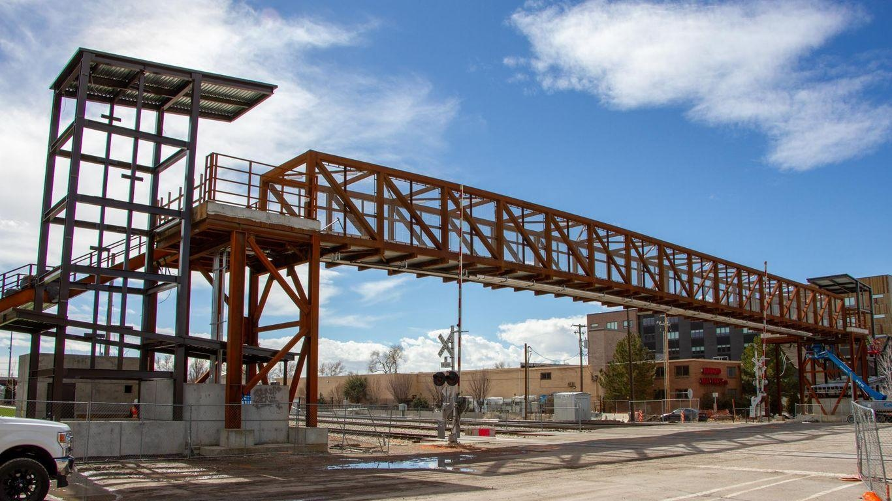

Construction on 300 North pedestrian bridge in Salt Lake City delayedAfter almost two years of construction, the $8.5-million pedestrian bridge on 300 North in Salt Lake City won't be ready this summer due to equipment delays. The latest: Work on the project adjacent to the North Temple FrontRunner Station is anticipated to be completed by late September, with a grand opening set in October, UTA spokesperson Carl Arky told Axios via email. What they're saying: "UTA had been hoping to complete work on the 300 North bridge in July, but it's taking a bit longer to receive the massive elevators that have been ordered for that project," Arky said. Why it matters: The long-awaited bridge will provide a safe thoroughfare for students walking to and from West High School. Most Salt Lake City students return to class from summer break Tuesday. - Freight trains moving through the area often get stalled on the tracks, which can last from a few minutes to over an hour. - The delays have prompted some commuters to cross around stationed train cars that could restart at any moment and obstruct their view of other incoming trains. Details: Once completed, the 200-foot-long bridge will overlook five train tracks owned by UTA and Union Pacific Railroad. - The overpass will come equipped with two large elevators on each end, as well as a stairway "runnel" that allows commuters to travel up the stairs with their bicycles with ease. Flashback: Construction on the project began in October 2021. More Salt Lake City stories No stories could be found |
 |